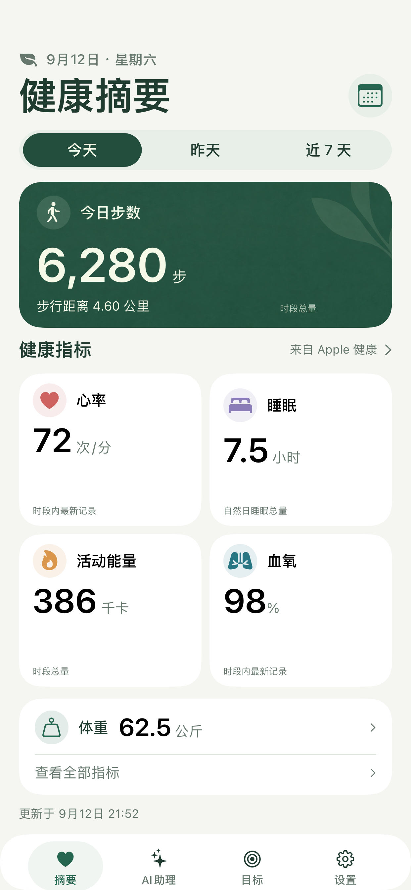
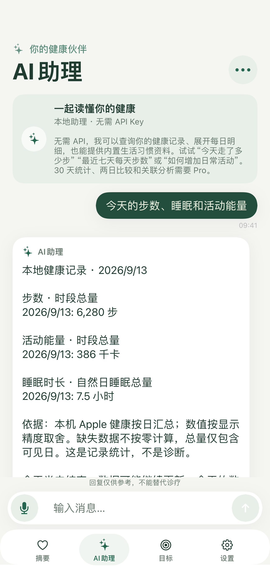
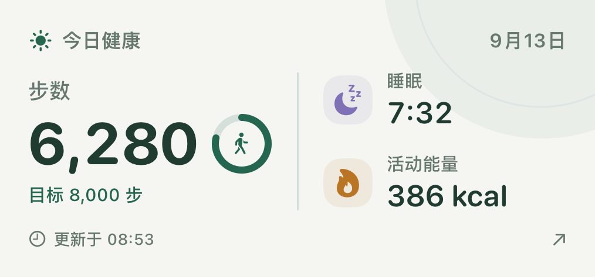

看当天的摘要
把步数、睡眠、心率等已有记录放在同一页。没有记录就留空，不用 0 填补。部分指标需要 Apple Watch 或其他来源。
元气指数已在 App Store 提供 · 版本 1.1.0
从你授权的 Apple 健康记录出发，查看摘要和趋势，建立一个小目标，也可以用平常的话问问自己的数据。本地功能不必注册，也不必配置 API。
1.1.0 现已上架，含小组件、三种对话模式与 Pro 一次买断

摘要、本地问答和目标默认留在设备上
只读取已有记录，不编造测量值
无自动续订；基础功能免费
打开应用后先阅读健康权限说明，点继续，再在系统弹窗里选择允许读取的类型。应用只读，不向 Apple 健康写入样本。
把步数、睡眠、心率等已有记录放在同一页。没有记录就留空，不用 0 填补。部分指标需要 Apple Watch 或其他来源。

可以问「今天走了多少步」「最近七天每天步数」，再追问「那昨天呢」。本地助理用规则和计算，不是通用大模型，也不会下诊断。

免费含 1 个目标。iOS 17 可加主屏幕和锁屏小组件，显示最近一次同步，不是实时监测。Pro 解锁 30 天统计、两日比较、关联分析和在线 AI。
步数、步行与跑步距离、活动能量、心率、静息心率、血氧、睡眠、体重、体能训练、心率变异性、呼吸频率、心肺适能、体脂率、收缩压、舒张压、体温。7 天趋势免费；30 天窗口属于 Pro。
本地不发送模型请求。API 只展示服务商回答，失败就报错。混合模式把简单查询留在本机。
简体、繁体、英、西、法、德、日、韩、巴葡、俄、阿、印地、印尼。语音仅在设备端识别可用时提供。
已经在用 iPhone 或 Apple Watch 记录活动，想把零散数据看成摘要和趋势的人。不面向 13 岁以下儿童，也不替代医生。
整理你授权的已有记录，显示当天摘要、趋势和目标进度，并用规则回答明确的记录问题。
不测量新的生理信号，不写入 Apple 健康，不诊断疾病，不提供处方或急救监护，也没有 Android 版本。
下列截图由生产界面渲染，使用合成示例数据。


元气指数用于健康记录整理与日常自我管理，不是医疗器械，不提供诊断、处方或急救监护。统计关联不代表因果。请在作出医疗决定前咨询合格的医疗专业人士。